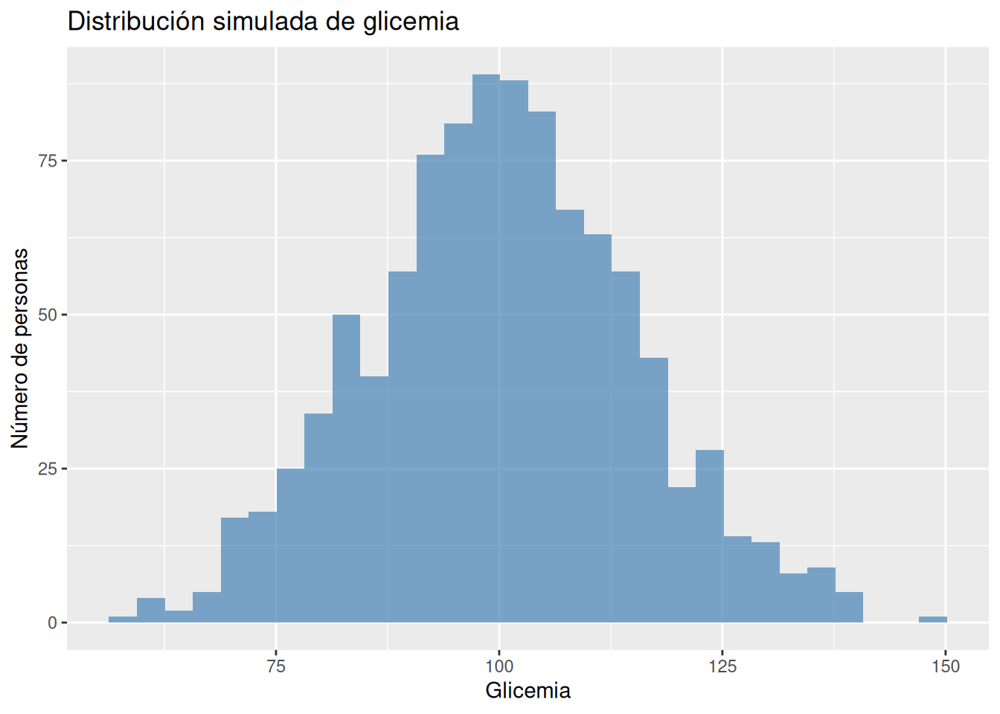
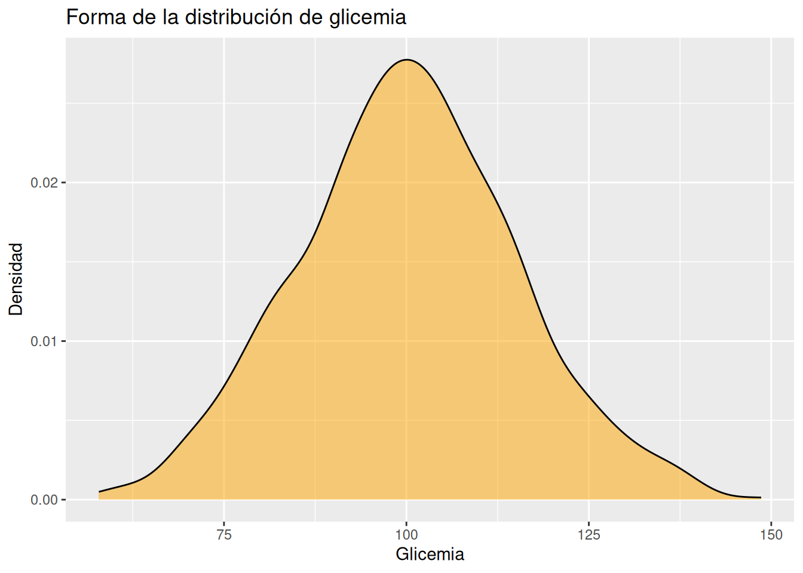
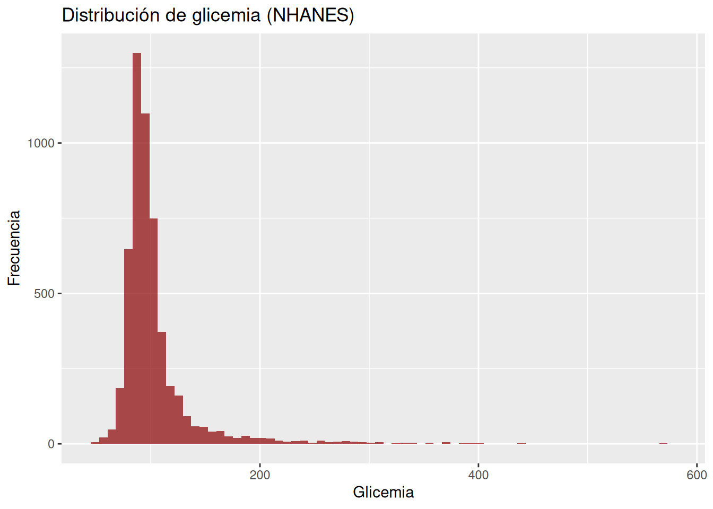
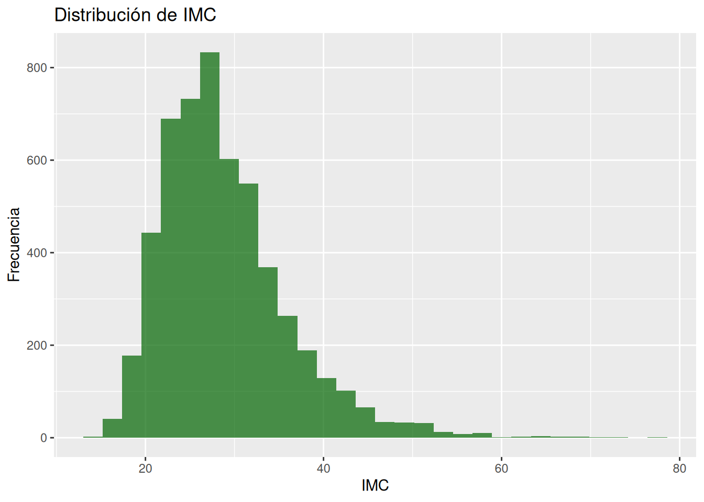
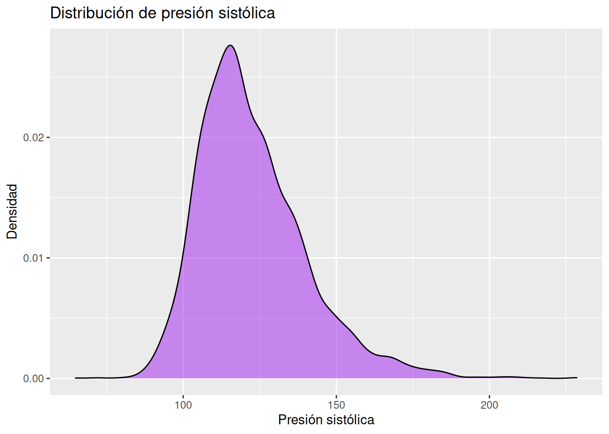
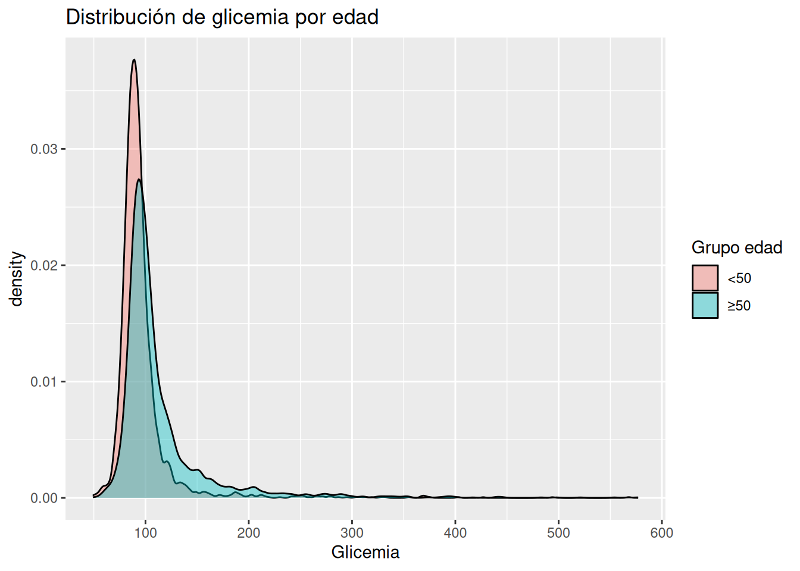

set.seed(123)
# Crear una población ficticia de glicemia
glicemia_sim <- tibble(
glicemia = rnorm(1000, mean = 100, sd = 15)
)6.- Distribuciones en la vida real
1. Intuición (SIN código)
En medicina, estamos acostumbrados a pensar en valores concretos:
- glicemia: “100 está normal”
- IMC: “30 es obesidad”
- presión arterial: “140 ya es hipertensión”
Pero la realidad biológica no funciona así.
👉 No existen pacientes “promedio”
👉 Existen poblaciones con variabilidad
¿Qué es una distribución?
Una distribución es simplemente la forma en que los valores de una variable se reparten en un grupo de personas.
Imagina esto:
- Tomas 1,000 pacientes
- Mides su glicemia
¿Todos tienen el mismo valor?
Claro que no.
Obtendrás algo así:
- muchos pacientes entre 80–100
- algunos entre 100–125
- pocos por encima de 126
👉 Eso ES una distribución
Analogía clínica
Piensa en la glicemia como si fuera la temperatura en una ciudad:
- No hay una sola temperatura
- Hay una distribución de temperaturas
Lo mismo ocurre en el cuerpo humano.
Valor individual vs población
Aquí está una idea clave:
| Nivel | Qué significa |
|---|---|
| 👤 Paciente individual | Un número (ej: glicemia = 110) |
| 👥 Población | Un rango de valores |
👉 El error común:
Creer que un solo valor representa a todos.
Valores comunes vs extremos
En cualquier distribución hay:
- Valores comunes → la mayoría de las personas
- Valores extremos → pocos individuos
Ejemplo clínico:
- IMC 22 → muy común
- IMC 45 → raro
👉 Pero ambos son reales.
Dispersión (variabilidad)
No todas las variables son igual de “estrechas”:
- La temperatura corporal → poca variación
- El IMC → mucha variación
👉 Esto se llama dispersión
Forma de la distribución
Las distribuciones pueden tener diferentes formas:
- Simétrica (tipo campana)
- Sesgada (más hacia un lado)
- Con colas largas (valores extremos)
Ejemplo clínico:
- IMC suele estar sesgado a la derecha
- glicemia puede tener cola hacia valores altos
Punto clave clínico
Los puntos de corte como:
- glicemia ≥ 126 → diabetes
- IMC ≥ 30 → obesidad
👉 NO reflejan la realidad completa
Son simplificaciones útiles, pero:
La biología es continua, no binaria.
Idea central del capítulo
👉 La medicina trabaja con distribuciones, no con valores únicos.
Y esto es fundamental para pensar en términos bayesianos.
2. Ejemplo simple (simulación en R)
Vamos a crear una población ficticia de glicemia.
Histograma
# Histograma de la glicemia
glicemia_sim %>%
ggplot(aes(x = glicemia)) +
geom_histogram(bins = 30, fill = "steelblue", alpha = 0.7) +
labs(
title = "Distribución simulada de glicemia",
x = "Glicemia",
y = "Número de personas"
)
Densidad (forma suave)
# Gráfico de densidad de la glicemia
glicemia_sim %>%
ggplot(aes(x = glicemia)) +
geom_density(fill = "orange", alpha = 0.5) +
labs(
title = "Forma de la distribución de glicemia",
x = "Glicemia",
y = "Densidad"
)
¿Qué estamos viendo?
- No hay un solo valor → hay un rango
- La mayoría está cerca de 100
- Hay valores extremos
👉 Esto ya es pensar en términos de incertidumbre
3. Ejemplo aplicado con NHANES
Ahora trabajamos con datos reales.
Variables:
- glicemia → LBXSGL
- IMC → BMXBMI
- presión sistólica → BPXSY_mean
Preparar datos
# Seleccionar sólo las variables que voy a usar
df_obesidad_dist <- df_obesidad %>%
select(LBXSGL, BMXBMI, BPXSY_mean, RIDAGEYR) %>%
drop_na()1. Distribución de glicemia
# Histograma - Distribución de la glicemia
df_obesidad_dist %>%
ggplot(aes(x = LBXSGL)) +
geom_histogram(bins = 70, fill = "darkred", alpha = 0.7) +
labs(
title = "Distribución de glicemia (NHANES)",
x = "Glicemia",
y = "Frecuencia"
)
Interpretación visual
- Mayoría en rango normal
- Cola hacia valores altos
- Algunos pacientes claramente elevados
👉 No hay una línea clara donde “empieza” la diabetes
2. Distribución de IMC
# Histograma - Dsitribución del índice de masa corporal
df_obesidad_dist %>%
ggplot(aes(x = BMXBMI)) +
geom_histogram(bins = 30, fill = "darkgreen", alpha = 0.7) +
labs(
title = "Distribución de IMC",
x = "IMC",
y = "Frecuencia"
)
Observación clave
- Distribución sesgada a la derecha
- Muchos pacientes con IMC elevado
- Algunos valores extremos
👉 Refleja la epidemia de obesidad
3. Presión arterial sistólica
# Gráfico de densidad de la presión arterial sistólica
df_obesidad_dist %>%
ggplot(aes(x = BPXSY_mean)) +
geom_density(fill = "purple", alpha = 0.5) +
labs(
title = "Distribución de presión sistólica",
x = "Presión sistólica",
y = "Densidad"
)
Observación
- Distribución más estrecha
- Menos dispersión que el IMC
- Pero aún con variabilidad importante
4. Comparación por edad (opcional)
# Gráfico de densidad que compara la glicemia con la edad
df_obesidad %>%
filter(!is.na(LBXSGL), !is.na(RIDAGEYR)) %>%
mutate(grupo_edad = if_else(RIDAGEYR < 50, "<50", "≥50")) %>%
ggplot(aes(x = LBXSGL, fill = grupo_edad)) +
geom_density(alpha = 0.4) +
labs(
title = "Distribución de glicemia por edad",
x = "Glicemia",
fill = "Grupo edad"
)
Qué muestra esto
- Los mayores tienden a desplazarse hacia glicemias más altas
- No es un cambio brusco → es gradual
👉 La enfermedad aparece como un cambio en la distribución
4. Interpretación clínica
1. No existe el paciente “promedio”
Cuando dices:
“La glicemia promedio es 100”
Eso no describe a nadie en particular.
👉 Describe una distribución completa
2. La enfermedad no es binaria
Ejemplo:
- glicemia 124 → “no diabético”
- glicemia 126 → “diabético”
👉 ¿Realmente son tan diferentes?
No.
👉 Están en la misma distribución.
3. Obesidad como fenómeno poblacional
El IMC muestra algo clave:
- No hay dos grupos separados (normal vs obeso)
- Hay una continuidad
👉 La obesidad no es un interruptor
👉 Es un desplazamiento de toda la distribución
4. Riesgo cardiovascular
Presión arterial:
- No hay un punto donde el riesgo aparece de golpe
- El riesgo aumenta progresivamente
👉 Esto es clave para decisiones clínicas
5. Conexión con Bayes
Pensar en distribuciones es el primer paso para pensar bayesianamente:
- No hablamos de certezas
- Hablamos de rangos de posibilidad
Ejemplo:
“Creo que este paciente tiene alta probabilidad de resistencia a la insulina”
Eso implica:
👉 una distribución de posibles estados fisiológicos
Idea final del capítulo
La medicina no trata valores individuales aislados. Trata distribuciones de pacientes con distintos niveles de riesgo.
Lo que acabas de aprender
- Qué es una distribución
- Por qué los datos clínicos no son un solo valor
- Cómo visualizar variabilidad
- Por qué los puntos de corte son simplificaciones
- Cómo empezar a pensar en incertidumbre
Ejercicios
Ejercicio 1 — Entender drop_na()
Crea un dataset con:
- glicemia
- IMC
Incluye algunos NA.
👉 Tareas:
- Cuenta cuántas filas hay antes
- Aplica drop_na()
- Cuenta cuántas quedan
- Reflexiona:
¿Qué tipo de pacientes estás eliminando?
Ejercicio 2 — Comparar con y sin drop_na()
Con NHANES:
- Grafica la distribución de glicemia SIN drop_na()
- Luego CON drop_na()
- Compara:
👉 ¿Cambia la forma de la distribución?
Ejercicio 3 — Jugar con set.seed()
- Genera 1000 valores de glicemia simulada SIN set.seed()
- Grafica
- Vuelve a correr → observa cambios
Ahora:
- Usa set.seed(42)
- Repite
👉 Pregunta:
¿Qué cambia y qué no cambia?
Ejercicio 4 — Variabilidad (clave)
Simula dos poblaciones:
#set.seed(123)
#baja_var <- rnorm(1000, 100, 5)
#alta_var <- rnorm(1000, 100, 20)👉 Grafica ambas distribuciones
Pregunta:
- ¿Cuál representa mejor:
- glicemia en ayunas?
Ejercicio 5 — Distribución clínica real
Con NHANES:
- Grafica IMC
- Identifica visualmente:
- zona más común
- valores extremos 3.Responde:
¿Tiene sentido el punto de corte IMC = 30 viendo la distribución?
Ejercicio 6 — Pensamiento clínico profundo
Observa la distribución de glicemia.
Responde:
- ¿Tiene sentido tratar igual a:
- glicemia 125
- glicemia 126?
👉 Explica usando el concepto de distribución
Ejercicio 7 (nivel siguiente)
Crea dos grupos:
- IMC < 30
- IMC ≥ 30
Y grafica la distribución de glicemia para ambos.
👉 Pregunta:
¿Las distribuciones son realmente distintas o se solapan?
(Este ejercicio abre la puerta al siguiente capítulo 👀)
Ejercicio 8 — Detectar sesgo en la distribución
Con NHANES:
- Grafica la distribución de IMC (BMXBMI)
- Observa la forma
👉 Preguntas:
- ¿Es simétrica o sesgada?
- ¿Hacia qué lado?
- ¿Qué significa clínicamente ese sesgo?
Ejercicio 9 — Comparar histogramas vs densidad
Para glicemia (LBXSGL):
- Haz un geom_histogram()
- Haz un geom_density()
👉 Pregunta:
¿Qué información te da cada uno que el otro no?
Ejercicio 10 — Identificar outliers clínicos
Con presión sistólica (BPXSY_mean):
- Grafica la distribución
- Identifica visualmente valores extremos
👉 Pregunta:
- ¿Qué valores considerarías clínicamente preocupantes?
- ¿Son frecuentes o raros?
Ejercicio 11 — Distribución vs punto de corte
Para glicemia:
- Grafica la distribución
- Agrega una línea vertical en 126
#geom_vline(xintercept = 126, color = "red")👉 Pregunta:
¿La línea separa claramente dos poblaciones?
Ejercicio 12 — Superposición de distribuciones
Divide IMC en:
- normal (<25)
- sobrepeso (25–30)
- obesidad (≥30)
Y grafica la glicemia para cada grupo.
👉 Pregunta:
¿Las distribuciones están separadas o se solapan?
Ejercicio 13 — Pensamiento bayesiano inicial
Observa la distribución de glicemia.
👉 Pregunta:
Si tomas un paciente al azar con glicemia de 110, ¿es más probable que sea “normal” o “prediabético”?
(No uses puntos de corte, usa la forma de la distribución)
Ejercicio 14 — Cambio en la distribución
Divide por edad:
- <40
- 40–60
- 60
Grafica glicemia.
👉 Pregunta:
¿La edad cambia el centro o la forma de la distribución?